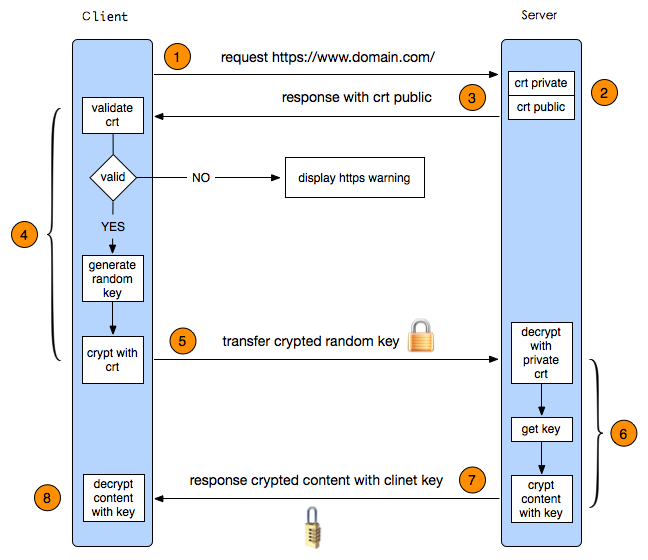
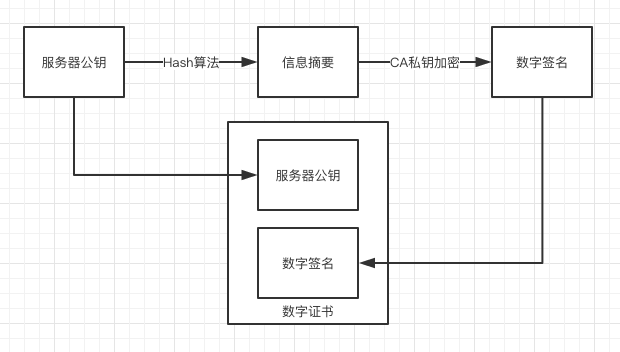
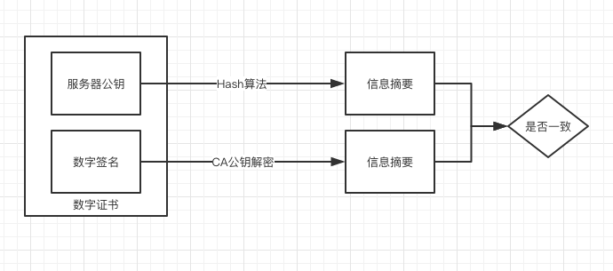

# HTTPS 协议总结
HTTPS 是以安全为目标的 HTTP 通道，简单讲是 HTTP 的安全版。
- HTTPS 协议定义
- HTTPS 流程分析
- TLS 握手优化
# HTTPS 协议定义
HTTPS 全称为超文本传输安全协议（HyperText Transfer Protocol Secure；常称为 HTTP over TLS、HTTP over SSL 或 HTTP Secure）是一种通过计算机网络进行安全通信的传输协议。HTTPS 经由 HTTP 进行通信，但利用 SSL/TLS 来加密数据包。HTTPS 开发的主要目的，是提供对网站服务器的身份认证，保护交换数据的隐私与完整性。这个协议由网景公司（Netscape）在 1994 年首次提出，随后扩展到互联网上。
可以看出，HTTPS 只是在 HTTP 的基础上，增加了 SSL/TSL 安全层，主要为了实现以下目的：
- 所有信息都是加密传播，第三方无法窃听。
- 具有校验机制，一旦被篡改，通信双方会立刻发现。
- 配备身份证书，防止身份被冒充。
# HTTPS 流程分析
下图是一次 HTTPS 请求的流程图，我们一起来分析一下。

- 1、客户端发起请求，同时将客户端支持的TLS 协议版本号、加密规则、一个随机数（Client random），发送给服务器。
- 2、服务器上有安装好的认证证书（将服务器的私钥，通过权威机构 CA 认证后，生成的证书公钥和私钥）。
- 3、服务端确认双方使用的加密方法，然后使用 hash 算法签名证书，然后将数字证书、一个服务器端生成的随机数（Server random），发送给客户端。
- 4、客户端验证证书。
- 使用 hash 检查证书是否被篡改。
- 验证失败，拒绝请求。
- 验证成功，生成新随机数（Premaster secret）。
- 5、使用证书公钥将随机值加密后传给服务端。
- 6、服务端用私钥解密消息内容，获得随机数（Premaster secret）。
- 7、服务端根据约定的加密方法，使用前面的三个随机数（Client random，Server random，Premaster secret）生成对话密钥（session key），并使用**对话密钥（session key）**加密传输内容，发送给客户端。
- 8、客户端使用同样的算法生成对话密钥（session key），并使用**对话密钥（session key）**对获取到的内容进行解密。
- 9、秘钥协商结束，客户端和服务器端通过对话密钥（session key） 作为对称加密 key，相互传输数据。
可以看到，HTTPS 在请求时，主要分为两个部分：
- 秘钥协商，使用非对称加密，生成秘钥。
- 对称加密，使用秘钥对每次请求进行加密。
为什么需要 3 个随机数，而不是只用 Premaster secret 生成会话密钥？
因为每个主机并不是都能产生完全的随机数的。有很多产生的只是弱随机数而已，比如范围小，可能被猜测。如果该随机数被破解，那么之前一系列握手都是没什么用的。因此用三个随机数一起生成密钥能使得伪随机数更接近随机。
# 证书合法性验证
服务器端发送公钥的时候，中间人截取了的公钥，并把自己的公钥发给了客户端，客户端发的消息就用中间人的公钥加了密，中间人不就可以解密看到消息了吗？
是的，这个时候就需要发挥证书的用处了，想要部署 HTTPS 服务，必须在 CA 认证机构中进行认证获得认证证书。客户端可以根据证书判断出具体请求到的服务器是否是中间人。
问题又来了，如果中间人并不直接替换证书，而是修改了其中的一部分内容，应该怎么应对呢？
我们可以使用 hash 算法，对证书进行签名，在客户端采用同样的 hash 算法进行验证，一旦发现不一致，就取消该请求。具体操作如下：
服务器端生成数字证书：

- 将服务器公钥进行 Hash 加密，生成信息摘要。
- 将信息摘要通过 CA（认证中心）私钥加密，生成数字签名。
- 将服务器公钥，数字签名组合成数字证书。
- 将数字证书发给客户端。
客户端验证数字证书：

- 客户端首先从数字证书中获取到服务器公钥，数字签名。
- 将服务器公钥进行 Hash 加密，生成信息摘要。
- 将数字签名，通过 CA 公钥进行解密，生成信息摘要。
- 比对两次生成的信息摘要是否一致，若一致，则证书验证成功。
在这期间如果有中间人对证书进行修改，最后生成的信息摘要就一定不一致，客户端就知道请求被攻击了。
# TLS 握手优化
- 精简证书大小
- 会话复用
# False Start
False Start 有抢跑的意思，意味着不按规则行事。TLS False Start 是指客户端在发送 Change Cipher Spec Finished 同时发送应用数据（如 HTTP 请求），服务端在 TLS 握手完成时直接返回应用数据（如 HTTP 响应）。这样，应用数据的发送实际上并未等到握手全部完成，故谓之抢跑。

可以看到，启用 False Start 之后，TLS 阶段只需要一次 RTT 就可以开始传输应用数据。False Start 相当于客户端提前发送加密后的应用数据，不需要修改 TLS 协议，目前大部分浏览器默认都会启用。
# 精简证书大小
如果需要进一步减小证书大小，可以选择 ECC（Elliptic Curve Cryptography，椭圆曲线密码学）证书。256 位的 ECC Key 等同于 3072 位的 RSA Key，在确保安全性的同时，体积大幅减小。下面是一个对比：
| 对称加密 Key 长度 | RSA Key 长度 | ECC Key 长度 |
|---|---|---|
| 80 | 1024 | 160 |
| 112 | 2048 | 224 |
| 128 | 3072 | 256 |
| 192 | 7680 | 384 |
| 256 | 15360 | 521 |
# 会话复用
如果建立 TSL 连接之后，如果出于某种原因，对话中断，就需要重新建立连接。这时有两种方法可以快速恢复原来的 session：一种叫做 session ID，另一种叫做 session ticket。
# Session Identifier
Session Identifier（会话标识符），是 TLS 握手中生成的 Session ID。服务端可以将 Session ID 协商后的信息存起来，浏览器也可以保存 Session ID，并在后续的 ClientHello 握手中带上它，如果服务端能找到与之匹配的信息，就可以完成一次快速握手。
# Session Ticket
Session Identifier 机制有一些弊端，例如：
- 负载均衡中，多机之间往往没有同步 Session 信息，如果客户端两次请求没有落在同一台机器上就无法找到匹配的信息。
- 服务端存储 Session ID 对应的信息不好控制失效时间，太短起不到作用，太长又占用服务端大量资源。
而 Session Ticket（会话记录单）可以解决这些问题，Session Ticket 是用只有服务端知道的安全密钥加密过的会话信息，最终保存在浏览器端。浏览器如果在 ClientHello 时带上了 Session Ticket，只要服务器能成功解密就可以完成快速握手。